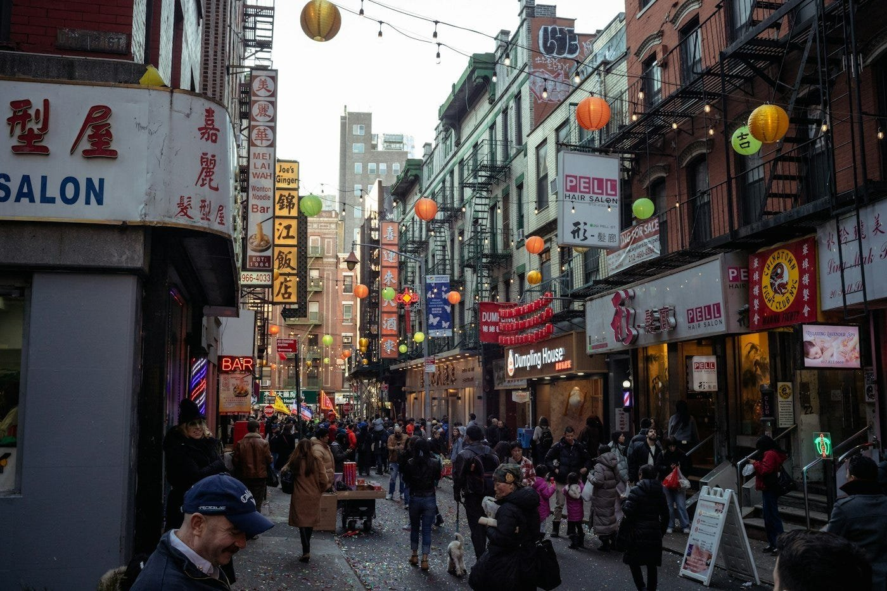
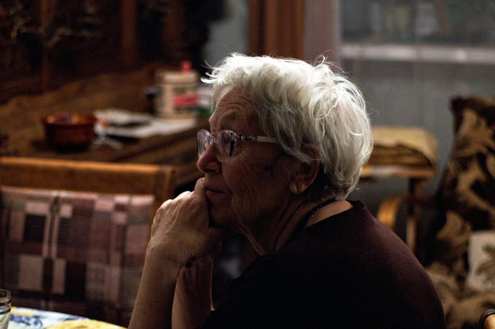
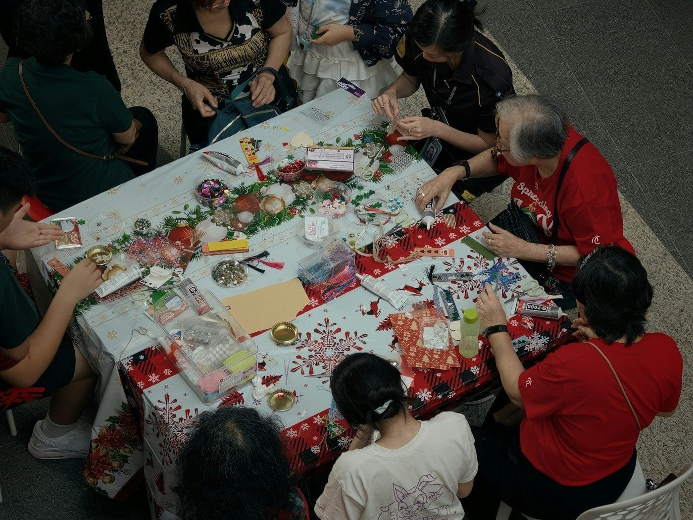
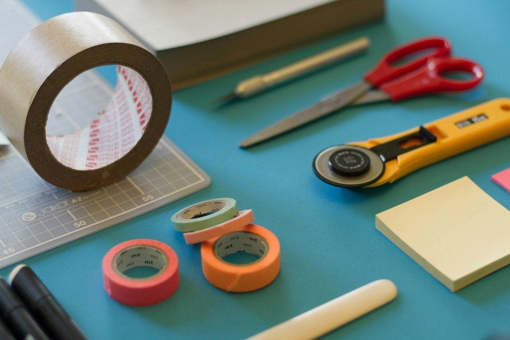
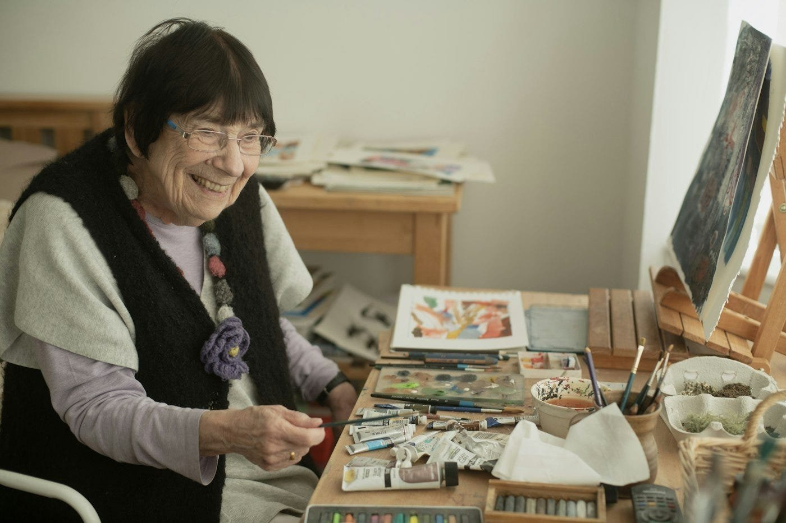
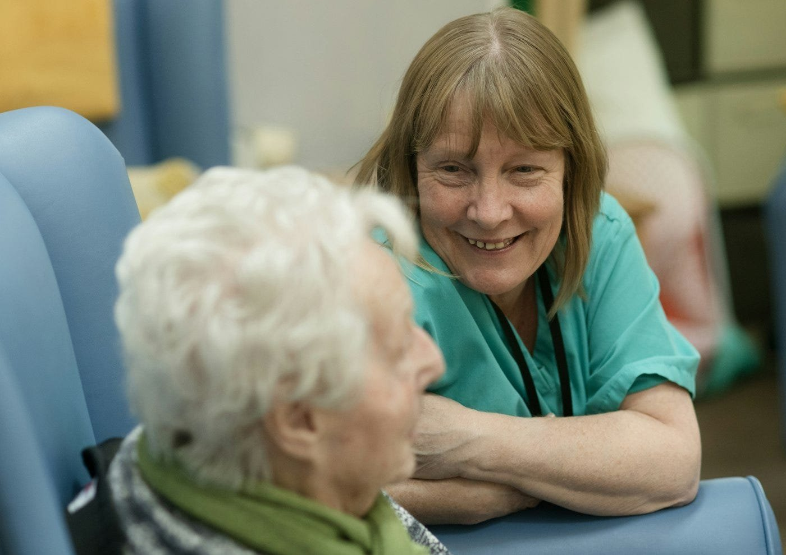
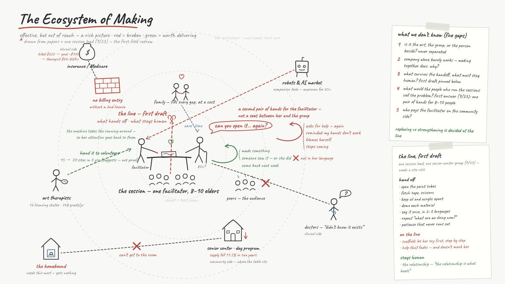
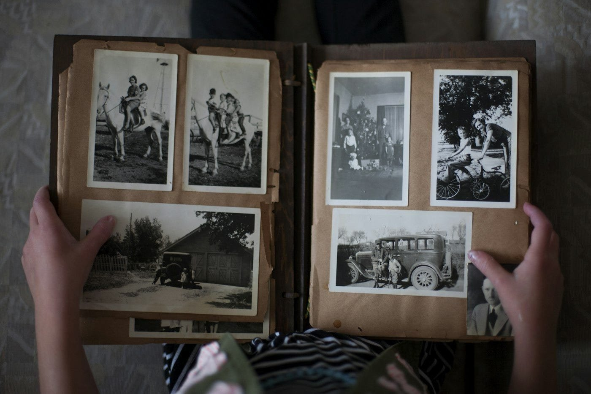
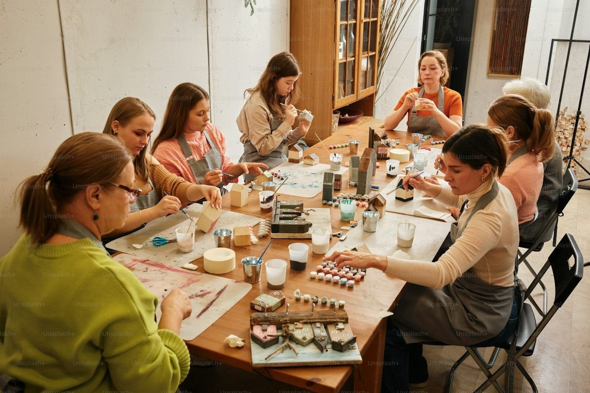

中國城的畫畫老師跟我們說了什麼
這是我在 SVA MFA Interaction Design 修 Studio Partnership II 的每週紀錄，這門課在做 Stanford Center on Longevity Design Challenge，跟我自己的畢業製作文章是分開的。
Studio Partnership II 進入第四週了。前面三週，我們知道的所有事情都來自文獻。不管是問題定義、研究地圖，還是機器可以接手什麼、什麼又非得留給人做，這條界線全都是我們這群根本沒踏進過現場的人自己寫出來的。這件事讓我一週比一週更在意，所以我們決定去找真正待過現場的人聊聊。
她剛從藝術治療畢業，之前在中國城帶過長輩的畫畫團體。因為她也讀 SVA，我們就是透過這層關係找到她的。我們聊了一個多小時，下面引用的都是她說的話，我只拿掉一些口語贅字，這邊就不寫她的名字了。

「他們不想讓你覺得自己連這個都做不到，所以寧可乾脆不做。」
我們原本以為，對長輩來說最難的部分是有些事情做不到。她卻說並不是這樣，真正難受的是必須開口請人幫忙。每次長輩請人幫忙轉開顏料管，都是在提醒他們自己的雙手已經不聽使喚了，有些人後來乾脆就不再出現。要是助手還得等人開口叫才過來，根本沒辦法解決這件事，那個讓人難受的瞬間還是跟原來一模一樣留在那裡。
「我的朋友一個個走了。總有一天會輪到我，我準備好了。」
有位九十幾歲的老太太在吃午飯時跟她說了這句話。老太太幾十年前從日本來到這裡，到了現在，身邊認識的人大多已經不在了。比起這句話本身，更讓我一直記在心裡的是她講起來有多平淡，而帶領者每週走進去的，就是這樣的教室。

「他們在哀悼自己一點一滴流失的身體。」
「哀悼」是她親口用的詞，並非我自己的形容。長輩心裡的哀傷，除了送走老朋友，也是因為自己的手、眼睛還有記憶力正慢慢退化。所以我們面對的根本不能算是一般那種有幾個學生動作比較慢的課堂，走進這間教室的長輩，心裡各自帶著失落與哀傷，但就算這樣，他們還是坐下來想把一張畫完成。
「就像同時要顧八到十個幼稚園小朋友一樣。」
現場就一位帶領者，要面對八到十位長輩。對她來說，雙手忙不過來還算其次，真正不夠用的是注意力。一下遞膠帶、一下找剪刀，還得一直重複說明步驟，這些瑣事不斷把她的注意力從眼前的長輩身邊拉走。

「機器人有個好處，就是永遠不會失去耐心，說不定會是很棒的助教。」
這句話我們都還沒問，是她自己主動提起的。我們這一個月來一直在繞著這件事打轉，我當下把這句話記了兩遍。對於另一面的真實情況，她也很坦白，說「遇到真的很難帶的參加者，我們自己也是會失去耐心的。」
「有太多感受是沒辦法用言語表達的。小孩跟長輩得到的幫助又更大，因為語言對他們的限制更多。」
人會接觸藝術，就是因為有些話說不出口。但她的教室裡同時得用三種語言溝通，結果在動筆前的步驟說明，以及畫完之後彼此分享的這兩段時間，反而成了大家最容易卡住的地方。

「『我居然真的完成了。』讓他們開心的從來就跟畫得漂不漂亮無關，單純是因為他們把作品完成了。」
這就是她衡量一堂課成不成功的標準，現在也成了我們的標準。畫作本身長怎樣其實不重要，真正要看的是長輩在過程中有多少是靠自己雙手完成的。就像她說的，「先讓他們一步一步自己試，真的不行再給解答。」

「從某種程度來說，你的創造力就是你的生命力。」
她講到這裡的時候，格局拉得比我預期的還要大，而且我覺得她是照字面上的意思認真這麼說的。那幅畫就是證據，證明這個人還活生生在這裡、還在創造東西，而且他們自己親眼看得見這個證明。
「治療之所以有用，是因為人跟人之間的關係能療癒人，跟理論有多高明一點關係都沒有。」
我問她，這當中有沒有哪些部分是可以被取代的。上面那句話就是她的回答，我們那條界線也就畫在這裡，人際關係這塊絕對不該由我們去動。聊到 AI 的時候，她說「AI 只會討好人，裡面沒有真的人在，而且它很少犯錯。」講到她自己在做的事，她則說「這之所以能療癒人，是因為我真的在畫畫，也真的有碰觸到他們。」

「他們都以為我是畫畫老師。他們不知道什麼是藝術治療，這樣也很好。」
長輩不想要這個標籤，她自己也不需要。以後不管我們做出什麼東西，也都不會掛上「治療」這兩個字。
這場對談改變了我們的想法。我們把原本的研究地圖重新畫了一遍，這個之後再另外寫一篇來聊。更大的轉變是機器人面對的方向，以前我們是讓機器人對著桌子、放在人跟人之間，現在我們讓它轉向帶領者，目的是把她的注意力還給她。這也幫我理清了心裡的一件事。變老是事實，需要別人幫忙也是事實，真正的問題是怎麼在幫忙的時候，不要拿對方的尊嚴來換。必須先開口才得來的幫忙是有代價的，但如果幫忙本來就一直在那裡，就不需要付出那個代價。

「我居然真的完成了。」這句話一直留在我腦海裡。第一週我寫過我阿嬤，她走後幾乎什麼都沒留下，照片沒幾張，也沒有寫過什麼字或畫過什麼圖，只剩下我記得的那些片段。如果這個專案能讓一位長輩多完成一件事，我希望是讓他們把自己的記憶和感受，用親手做出來的形式保存下來，留給某個人，當作自己曾經來過的痕跡。

接下來我們會去找更多第一線的實務工作者聊聊，也會實際坐進活動現場，親眼看看帶領者的一雙手在課堂上到底都在忙些什麼。
